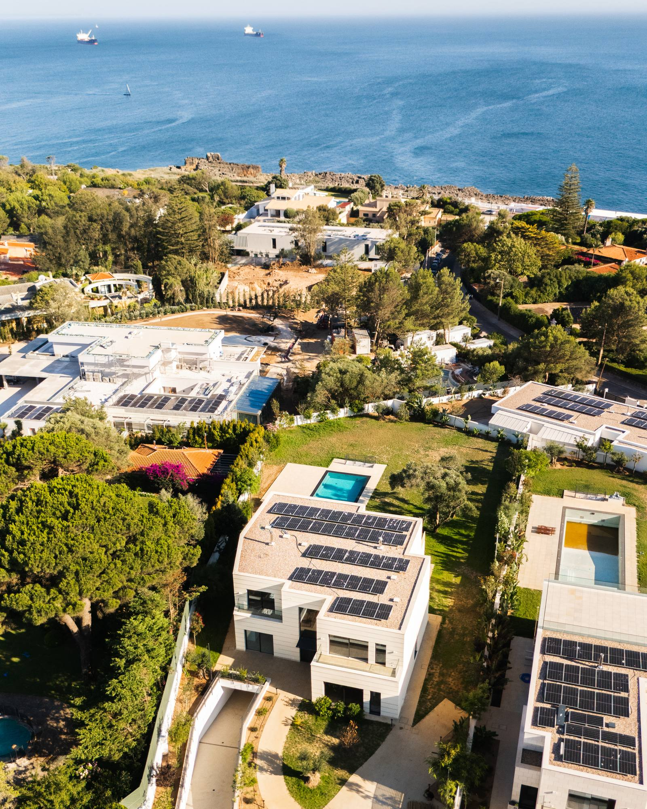
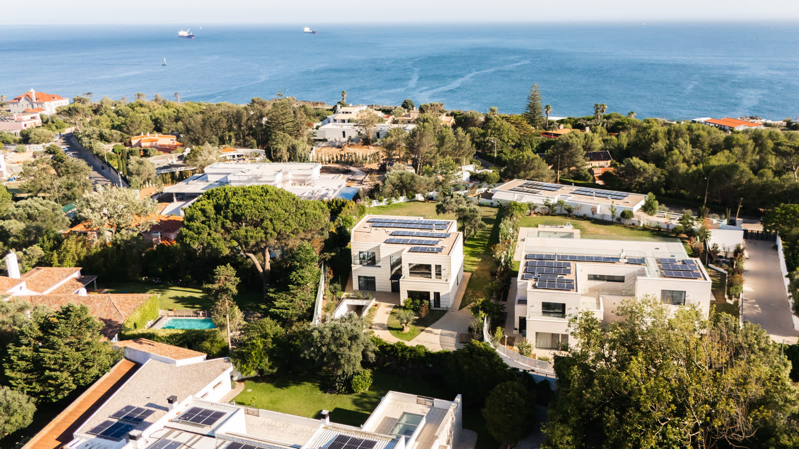
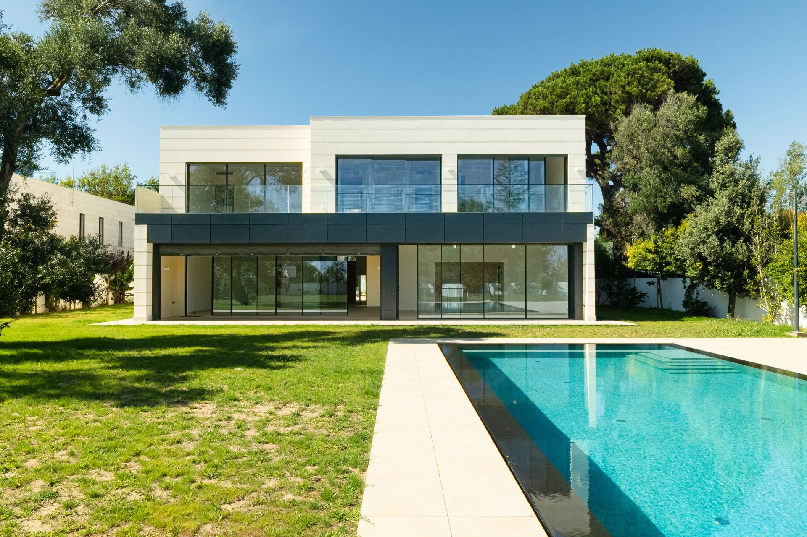
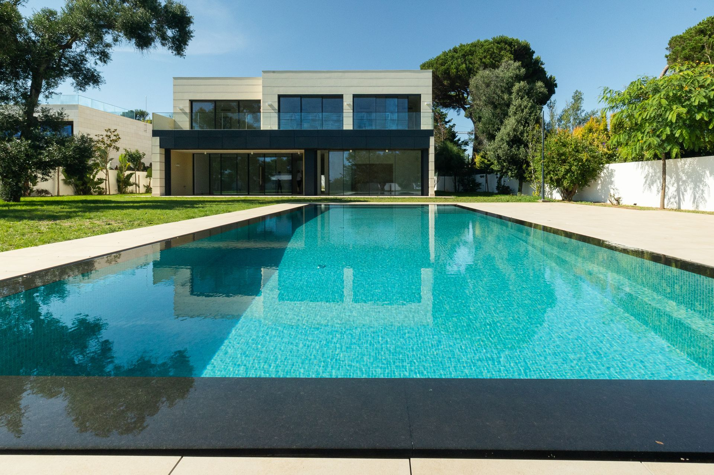
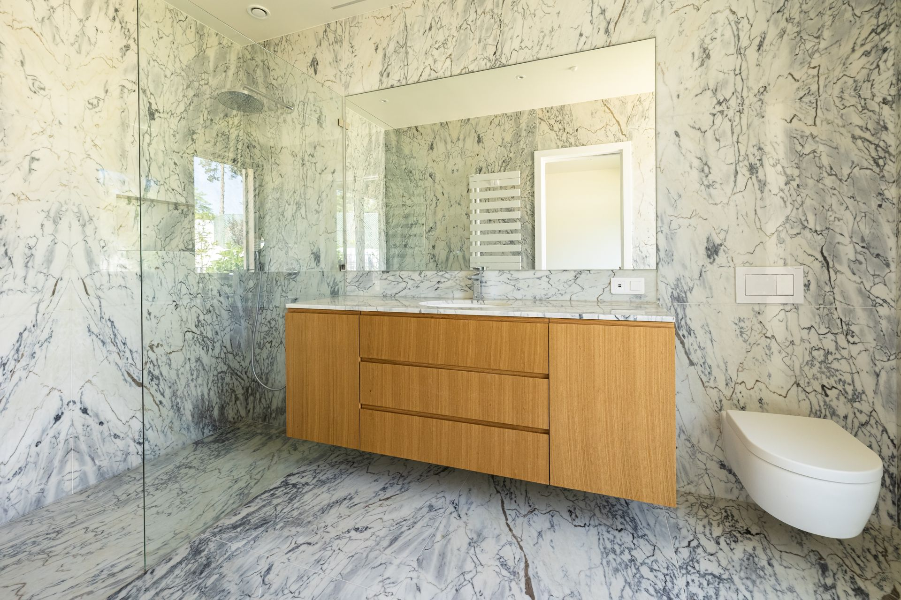
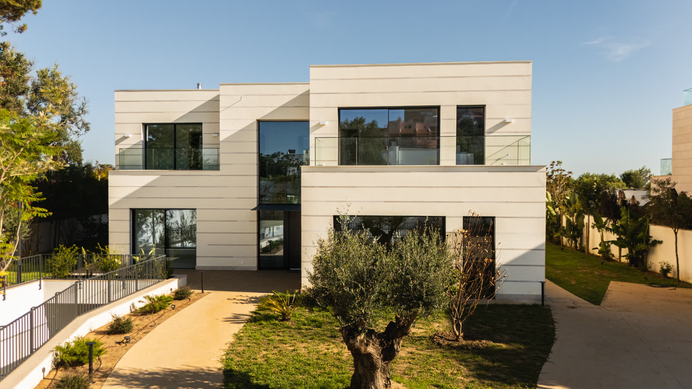
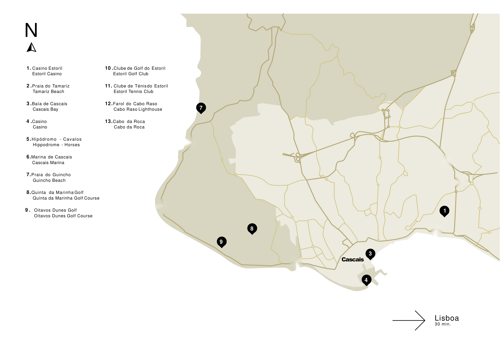

The Gandarinha Estate · Cascais, Portugal
The Gandarinha Estate · Cascais, Portugal

Private Digital Dossier
Cascais · Portugal
An Architectural Masterpiece in the Heart of Gandarinha, Cascais
Confidential enquiriesLoading the walkthrough…

The Gandarinha Estate is more than a residence; it is a refined private sanctuary. Within its gates, light moves through generous rooms, high glass opens living spaces seamlessly onto gardens, terraces, and the pool, and the line between indoors and outdoors disappears. Quiet and discreet, yet moments from the Atlantic and Cascais Marina.

Gandarinha holds a privileged position within Cascais. The waterfront, the marina and the historic centre are close enough to make everyday life effortless, yet the streets here are quiet and residential, and home feels a world apart.
Homes that combine this scale, this privacy and this proximity to the Atlantic rarely reach the market. When they do, they are shown quietly, and to a few.
Here, the address is not simply part of the residence. It is part of the life it offers.

Where indoor and outdoor living merge seamlessly.
The residence is conceived around space, light and an effortless dialogue between architecture and landscape. Generous living areas open directly to the gardens, the limestone terraces and the pool, so a morning coffee, a long lunch or an evening with friends drifts outside without a second thought.
Across three levels, entertaining spaces, private bedroom suites and discreet service areas each have their place, and a private lift links the whole house quietly.
The result is a home that feels substantial without becoming formal, and private without ever feeling isolated.
Grand entertaining on the garden level, private retreat above, and everything the house needs kept discreetly out of sight below: three levels, connected by a private lift.


High glass doors connect the principal living spaces directly with the gardens, limestone terraces and pool.
Architectural plans are indicative and for reference only; the finished property may differ.
Choose a level, then select a space to place it on the plan.
A considered palette of natural materials, refined finishes and carefully integrated systems.
From the arrival courtyard to the upper terraces, the residence as it is: open, light and quiet.











Select any photograph to view it full screen. Further technical documentation is available privately upon request.
Mornings on the Atlantic coast, lunch at the marina, an evening in the historic centre, and Lisbon thirty minutes away.
Gandarinha offers a rare balance: the calm of a private residential enclave, with the waterfront, the marina, the historic centre and everyday life close at hand. Guincho’s beaches and the dunes of Oitavos lie along the coast to the west, Estoril and Lisbon to the east.

Natalie Gutman
eXp Realty · AMI 18470
The Gandarinha Estate is shown by private appointment. Natalie arranges every viewing personally and discreetly.
Due to the exclusive nature of The Gandarinha Estate, full technical architectural drawings, exact location details, and comprehensive private video walkthroughs are available exclusively upon verified enquiry.
or leave your details